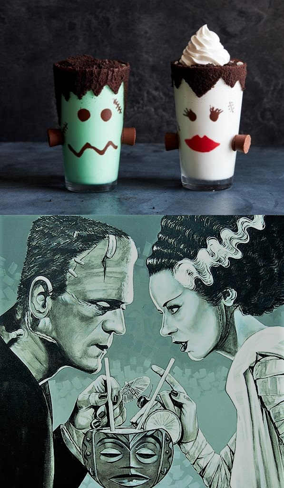

Frankenshake and Bride-of-Frankenshake
Trick-or-treat! It is that time of year again! Celebrate Halloween with these creepy treats inspired by your favorite monster couple.

Ingredients
- 3 ounces semisweet chocolate chips
- 20 chocolate wafer cookies, finely crushed
- 4 chocolate-covered caramels, such as Rolos
- 2 ounces red candy melts
- 2 pints vanilla ice cream
- 1/2 cup milk
- 1/4 teaspoon peppermint extract
- 3 to 4 drops green food coloring
- Canned whipped cream, for serving
Directions
For the Frankenshake
- Melt the chocolate chips in a small bowl in the microwave for 30 seconds. Stir, then heat until fully melted.
- Tip a pint glass on its side & draw a mouth and eyes on the inside of the glass with the melted chocolate.
- Stand the glass upright & brush chocolate on the rim of the glass in a zig-zag pattern for hairline.
- Press the crushed chocolate wafer cookies on the outside of the glass to coat.
- Put 2 dollops of chocolate on the sides of the glass, then stick 2 of the chocolate-covered caramels on top and press.
- Place the glass in the freezer until the chocolate has hardened, about 10 minutes or up to overnight.
For the Bride-of-Frankenshake
- Melt the candy melts in a small bowl in the microwave for 30 seconds. Stir, then heat until fully melted.
- Tip a pint glass on its side. Draw red lips.
- Draw eyes on the inside of the glass using the melted chocolate.
- Stand the glass upright and brush chocolate on the rim and down the outside of the glass to resemble the hairline.
- Press the crushed chocolate wafer cookies on the chocolate on the outside of the glass to coat.
- Put 2 dollops of chocolate on the sides of the glass.vStick the remaining 2 chocolate-covered caramels on top and press.
- Place the glass in the freezer until the chocolate has hardened, about 10 minutes or up to overnight.
Now, Make The Milkshakes!
- Blend the ice cream and milk in a blender until smooth.
- Pour half into the Bride-of-Frankenshake glass and chill in the freezer.
- Add the peppermint extract and green food coloring to the remaining milkshake in the blender and blend.
- Pour into the Frankenshake glass.
- Cover the top of each glass with the remaining crushed wafer cookies.
- Swirl the whipped cream on top of the Bride's glass. Serve immediately.
Contact Kimberly
To see full recipe, visit The Food Network